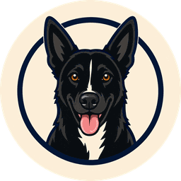
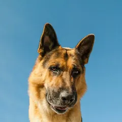
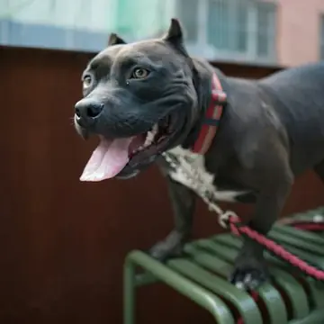
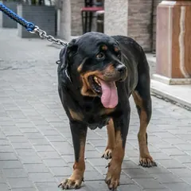
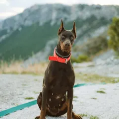

Breed-behavior education Every breed, one at a time
Dog Unpacked
He's not broken. He's bred that way.
Every video traces one everyday behavior back to the job the breed was bred for — cited on screen. Every breed, one at a time. No myths, no fear, no training gimmicks.
Sources on screen AKC breed standards American Temperament Test Society peer-reviewed studies
-

German Shepherd -

Pit Bull -

Rottweiler -

Doberman
Latest
Full breed breakdowns live on YouTube.
Breed Files
The first Dog Unpacked guide — the German Shepherd File — lands in December. Subscribers get it first. The breeds after that are chosen by what readers tell us in the form above.